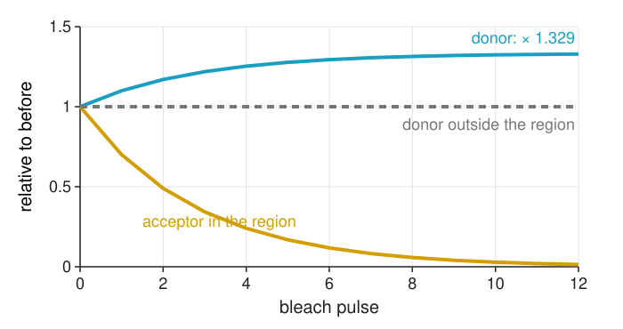
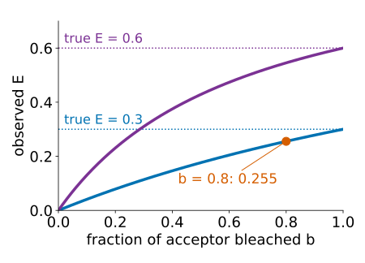
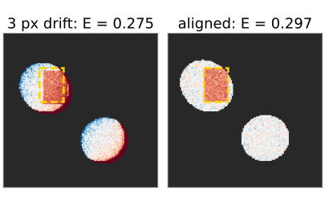
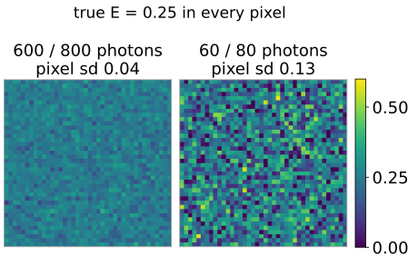
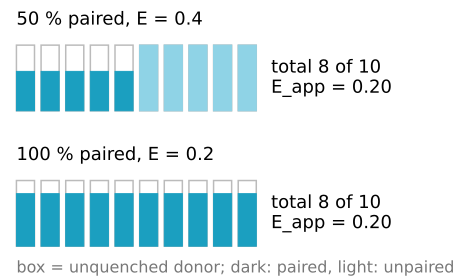

Acceptor photobleaching, and what an efficiency means
Image analysis
About this lecture
FRET dims the donor. Destroy the acceptor, and the donor gets its light back. Comparing the donor before and after gives the efficiency from one sample, without bleed-through coefficients.
The idea: E = 1 - I_D^\text{pre}/I_D^\text{post}.
Corrections, each with its own control: incomplete bleaching, donor bleaching, motion, photoconversion.
An end-point method; how it compares with sensitised emission and lifetimes.
Pixel-wise against region-wise E: a ratio of noisy numbers.
What every intensity method really measures: the apparent efficiency f \cdot E.
Slides titled The math give the formulas and proofs; the ideas are complete without them.
The idea: dequenching

Image the donor. Then illuminate a region strongly with acceptor light only: the acceptor photobleaches (is destroyed).
Without acceptor, nothing takes the donor’s energy: the donor in the region gets brighter. Outside the region nothing changes.
One sample, one channel that matters (the donor), no d, a or G: the method calibrates itself.
How much brighter?
The donor’s brightness is proportional to 1 - E (the fraction of its excitations it keeps):
E = 1 - \frac{I_D^\text{pre}}{I_D^\text{post}} .
Example: donor 600 before, 800 after → E = 1 - 600/800 = 0.25.
After full bleaching the donor shines as if alone: I_D^\text{post} is the unquenched donor.
Outside the bleached region E must come out as 0: a built-in check.
In the time course on the previous slide (E = 0.25, 12 pulses each bleaching 30 % of the acceptor), 1.4 % of the acceptor is left and the donor rises by a factor 1.33.
acceptor photoconversion into a donor-coloured form
too high
acceptor-only cells must show no donor increase
molecules diffusing into the region
too low, live cells
bleach fast, or fixed cells
Incomplete bleaching
If only a fraction b of the acceptors is destroyed, only those donors are dequenched. The donor rises less, and E comes out too low.
Example: true E = 0.30 with b = 0.8 gives an observed 0.255. Correction from the observed E_\text{obs} and the measured b (from the acceptor image, before/after):
E = \frac{E_\text{obs}}{b + (1 - b)\,E_\text{obs}}
The worked example: E_\text{obs} = 0.25, b = 0.8 → E = 0.25/(0.8 + 0.05) = 0.294.

The math: incomplete bleaching
All donors paired, each acceptor independently bleached with probability b. Donor intensity (relative to the unquenched donor):
before: 1 - E;
after: a fraction b of donors is unquenched (1), a fraction 1 - b still quenched (1 - E): \;b + (1 - b)(1 - E) = 1 - (1 - b)E.
Solve for E: E_\text{obs}\,(1 - (1 - b)E) = bE \;\Rightarrow\; E = \dfrac{E_\text{obs}}{b + (1 - b)E_\text{obs}}. For b = 1 both are equal.
Donor bleaching, motion, photoconversion
Donor bleaching: the donor itself loses some brightness at every image, and the strong bleach light may hit it too. This lowers I_D^\text{post}, so E comes out too low (it can even become negative). Control: the same cell outside the region, or a neighbouring cell. If it dropped by 5 %, divide the post value by 0.95: 600/800 → 1 - 600/(800/0.95) = 0.287.
Motion: if the cell moved between before and after, 1 - \text{pre}/\text{post} shows bright and dark edges. Align the images before dividing.
Photoconversion: some acceptors, when bleached, turn into a species that emits in the donor channel. That looks like dequenching. Control: bleach acceptor-only cells; their donor channel must stay dark.

Try it: bleach the acceptor
An end-point method
The acceptor is gone: one measurement per cell, no time course.
Bleaching takes seconds to minutes; in live cells unbleached acceptors diffuse into the region and the dequenching is underestimated.
sensitised emission
acceptor photobleaching
donor lifetime (FLIM day)
images
3 per time point
donor before/after
donor decay
controls
donor only, acceptor only, G
non-bleached region, acceptor only
donor alone (\tau_D)
time-lapse
yes
no (end point)
yes
sensitive to
coefficients, background, alignment
bleaching, motion, diffusion
fitting, photon numbers
Pixel-wise or region-wise?
E = 1 - P/Q in every pixel is a ratio of two noisy counts (unit 4 treats ratios in general):
P = 600, Q = 800 photons per pixel: \sigma_E \approx 0.04.
P = 60, Q = 80: \sigma_E \approx 0.13: the map is speckle, and dim pixels are biased.
Better: sum before and after over the region, then divide (ratio of sums). Or smooth both images with the same filter before dividing (denoise: a linear filter on both is allowed).

The math: the noise of E = 1 - P/Q
First-order Taylor expansion (delta method, derived in unit 4) of g(P, Q) = 1 - P/Q around the means:
\delta E \approx -\frac{1}{Q}\,\delta P + \frac{P}{Q^2}\,\delta Q, \qquad \sigma_E^2 \approx \frac{\sigma_P^2}{Q^2} + \frac{P^2\sigma_Q^2}{Q^4} .
With Poisson counts, \sigma_P^2 = P and \sigma_Q^2 = Q:
Not every donor has an acceptor. With a fraction f of donors paired at efficiency E, every intensity method measures
E_\text{app} = f \cdot E .
50 % bound at E = 0.4 looks exactly like 100 % bound at E = 0.2: both give 0.2.
The distances differ: with R_0 = 5 nm, E = 0.4 is 5.35 nm (1.07R_0), E = 0.2 is 6.30 nm (1.26R_0).
Also in unit 2: E_\text{app} = F_c/(F_c + G I_{DD}) = fE.

A change in E_\text{app} can be a change in distance or in how many molecules bind.
The math: why intensities give f \cdot E
Donors are a mixture: a fraction 1 - f unpaired (brightness 1), a fraction f paired (brightness 1 - E). Before bleaching the total is (1 - f) + f(1 - E) = 1 - fE; after full bleaching it is 1:
1 - \frac{I^\text{pre}}{I^\text{post}} = fE .
Intensities add, so the two populations cannot be told apart. The donor’s decay can: it is a sum of two exponentials, (1 - f)\,e^{-t/\tau_D} + f\,e^{-t/\tau_{DA}}, with \tau_{DA} = \tau_D(1 - E). Fitting it gives E and f separately: lifetime imaging (FLIM day) and its phasor plots exist largely for this.
Try it: half the donors paired
Before claiming a distance
One well-defined pair (one donor, one acceptor, one distance)?
\kappa^2 justified (freely rotating dyes, or a known structure)?
Fraction paired f known (or measured by lifetimes)?
E inside the sensitive window (0.5R_0–1.5R_0)?
Corrections and controls listed (bleaching, background, alignment, photoconversion)?
Usually the honest statement is a change in E_\text{app} between conditions, not a distance.
Summary
Bleaching the acceptor dequenches the donor: E = 1 - I_D^\text{pre}/I_D^\text{post}, from one sample, no coefficients.
Correct for incomplete bleaching (E = E_\text{obs}/(b + (1 - b)E_\text{obs})), donor bleaching (a non-bleached control), motion (align), and check photoconversion with acceptor-only cells.
An end-point method; diffusion limits it in live cells.
Pixel-wise E is a noisy ratio (\sigma_E \approx 0.04 at 600/800 photons); sum over a region first.
Intensity methods measure E_\text{app} = fE: binding fraction and distance are mixed. Lifetimes separate them (FLIM day).